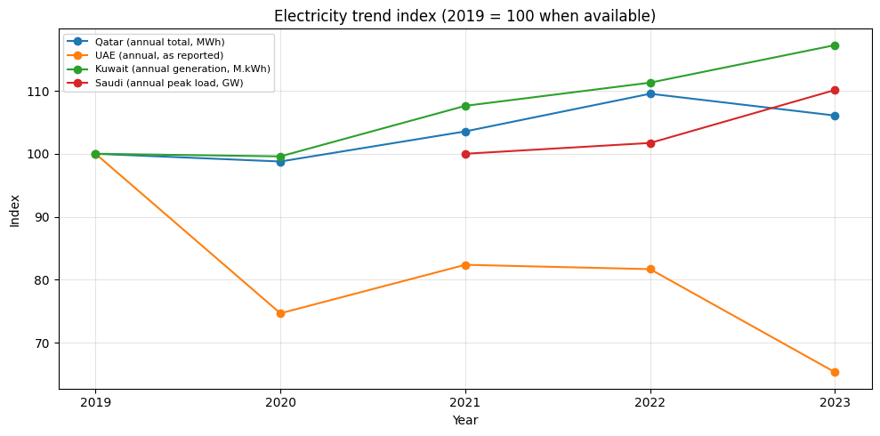
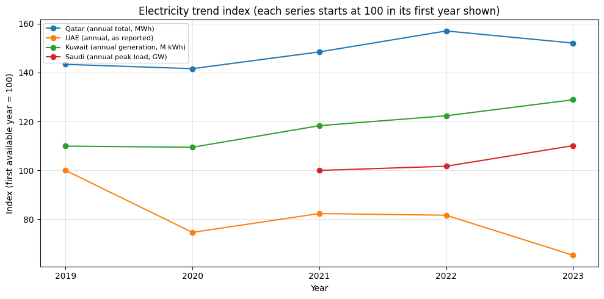
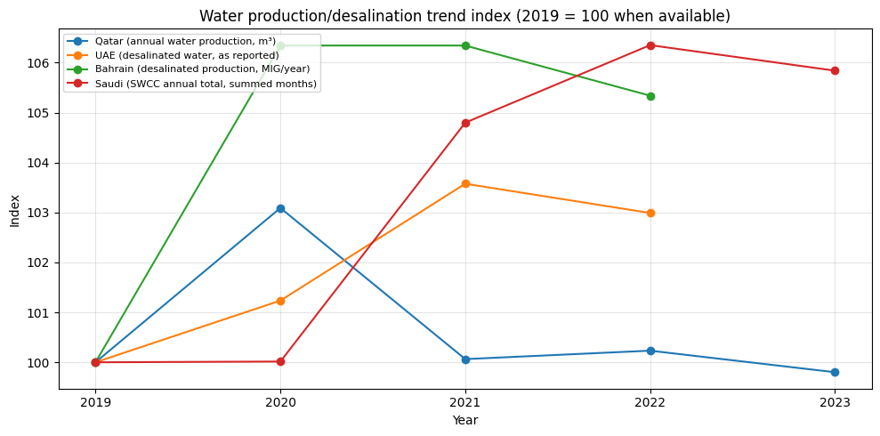

Technology, infrastructure & climate.
Data projects and assessments on AI compute, energy systems, solar technology, and infrastructure constraints.

US AI Datacenter Tracker
This is an interactive map of where the largest AI data center campuses are being planned and built across the United States. Every point is a real project drawn from my own tracking workbook, color coded by whether it is operational, under construction, or still just announced. Click any node and it gives you the developer, the location, the planned capacity, the dollar figure, the timeline, and a source link, so nothing here has to be taken on faith. The goal is to make the footprint legible to people who do not spend their week reading earnings calls and county zoning dockets.
I built this because the announcements move faster than the reporting. Most people have no idea that more than seventy gigawatt scale campuses have been
proposed since ChatGPT launched, or that a single one of these sites can demand as much electricity as a mid sized city. The buildout is happening at a speed and scale that outruns public understanding, and I want the public to actually see where it is landing and who is behind it.
I want to be clear that I am not against data centers. They are the physical backbone of everything we are building, and the country genuinely needs more of them. My argument is narrower and it is about pace and proportion. The industry is overextending. Companies are announcing capacity that dwarfs the entire current installed base, racing to break ground before tenants or power are actually secured, and some of it is already unraveling in public. Fermi pitched an eleven gigawatt campus and still cannot find a customer. OpenAI reversed its own Abilene expansion. That is not disciplined infrastructure growth. That is a land grab measured in gigawatts, and the cost of it lands on power grids, water tables, and ratepayers who never got a vote.
What I want to study is the path. The interesting question is not whether the boom is real, it is how policy is absorbing it and where the pressure goes next. Lordstown banned future data centers after one moved in. Texas wrote new reliability rules into Senate Bill 6. Utilities are quietly restructuring entire rate cases around a single hyperscale customer. I want to track that in real time, the widening gap between what gets announced and what actually gets energized, and the ways legislation around these sites is reshaping the real world. Following it closely is the only way to stay ahead of it rather than reacting after the concrete is poured.
This is an ongoing project. The map is a living snapshot, not a finished document. Projects stall, capacities get revised down, new sites get announced almost every month, and I will keep updating it as the picture changes.
Datacenter Feasibility in the Gulf
I collected and organized open-source data (OSINT) to assess the feasibility of scaling data centers across the Arab Gulf as AI demand accelerates and regional governments push to avoid falling behind. I focused on key infrastructure signals like electricity consumption, peak load, and desalinated water production, since power and cooling capacity shape what is actually realistic. By mapping these trends across Gulf states, I built a clearer picture of where capacity is growing, where constraints are tightening, and what that implies for future data center expansion tied to AI compute needs.



Analytical Review of Optima Solar Systems Offerings
DATE: February 17, 2026
SUBJECT: Analytical Review of Optima Solar Systems Offerings
| Category | Observation | What it means |
|---|---|---|
| Pricing architecture | The flyer uses a consistent markdown of about 20% across the product tiers and frames the deal around “Limited Stock.” | The discount structure creates urgency and makes waiting feel costly. |
| Upgrade psychology | The price gap between the Mini and Maxi versions stays small compared with the base cost. | This creates a decoy effect. The Maxi package feels like the smarter buy because buyers get more panels for a small added cost. |
| Battery and inverter fit | In the Gold 3KW tier, the 2.88kWh battery gives less than one hour of backup at full load. | The system fits load shedding needs, such as lights, fans, and basic backup. It is not full off-grid autonomy. |
| Panel density | The Platinum tier moves from 460W panels to higher-density 560W panels. | This suggests the company understands roof-space limits for larger residential installations. |
| System redundancy | The 10KW system uses two 5KW inverters in parallel. | If one inverter fails, the full system does not go dark. That adds resilience. |
| Market context | The pricing is listed in Ghanaian cedi. | The product targets a market where currency pressure and energy instability make solar feel like basic infrastructure, not a luxury upgrade. |
| Bill savings claim | The flyer claims “95% Bill Save.” | That claim is bold. It would likely require major lifestyle changes or a strong net metering setup, neither of which the flyer explains. |
| Hardware mismatch | The Diamond 5KW Maxi tier includes ten 460W panels, which produce 4.6kW peak against a 5KW inverter. | Customers pay for inverter headroom they cannot fully use unless they expand the array later. |
| Trust signals | The flyer highlights “Eco Friendly,” “Warranty,” and “Battery Life.” | These icons build trust, but the flyer does not state warranty length. For a major purchase, that is a weak spot. |
| Brand positioning | The tagline “Enriching lives” sells comfort and stability rather than just hardware. | The company is selling reliable power as a lifestyle, not only panels, batteries, and voltage. |

Memo on Rep. Himes and Brookings Experts Discuss Data Center Backlash, AI Security, and the 2026 Midterms
On Wednesday (October 21), the Brookings Institution's AI and Emerging Technology Initiative held an event titled “AI on the ballot: Data centers and the 2026 midterms.” At the event, House Permanent Select Committee on Intelligence Ranking Member Himes (D-CT) and several Brookings experts discussed how AI has become an issue in races across the country, from local concerns about data centers to the national security implications of building AI infrastructure overseas and the threat AI poses to election security.
- Fireside Chat with Rep. Himes (D-CT). Rep. Himes (D-CT) warned that frontier AI models are showing what he called unbelievable hacking abilities, opening a new area of election security threats, and said AI makes it easier for foreign actors like Russia to create extremely realistic deepfakes. He said the backlash against data centers is solvable if local governments make sure these facilities do not draw heavily on public resources such as water, and said he believes the Ratepayer Protection Act, which stalled in the Senate, would have done little. Himes also called for more monitoring and transparency of frontier models and criticized how Anthropic framed its recent legislative proposal.
- Building AI Infrastructure Abroad and Competition with China. Brookings’ Thomas Wright said inference compute largely needs to be built in the U.S. because of latency, and that energy-intensive training centers built outside the U.S. should be located with close allies, warning that facilities in the Middle East could be targeted. Kyle Chan noted that China generates more than twice as much electricity as the U.S. and is building up its energy to make up for its deficit in chips, cautioning that local backlash could slow U.S. compute if it slows the energy buildout.
- Community Backlash and Local Leverage. Brookings’ Anthony Pipa and Mark Muro attributed growing local opposition to data centers to a lack of transparency, real risks to land, water, and air, and frustration with secretive deals and the way the technology is being imposed on communities. Pipa called for community benefits to move away from compensation and toward investment, including equity for communities. Muro said the backlash has elevated scrutiny of company behavior and created a moment for places to set their own development visions, pointing to free compute for universities and startups, housing aid, and support for small businesses as investments companies could provide.
- Panelist Policy Recommendations. When asked to name one policy change that would improve the broader AI issue, Wright pointed to energy reform, and Chan called for streamlining power buildout and grid connection without raising electricity bills. Pipa proposed SWAT teams of lawyers or engineers to help local communities complete needed assessments, along with funding for community equity, while Muro called for states or the federal government to help make sure places have good development strategies and make good deals.
See below for more details from our select coverage of the event. As always, please reach out with any questions.
Read the full memo
Fireside Chat with Rep. Jim Himes (D-CT)
- Rep. Jim Himes (D-CT), Ranking Member, House Permanent Select Committee on Intelligence
- Elham Tabassi, Director, Artificial Intelligence and Emerging Technology Initiative, Brookings Institution (Moderator)
Rep. Himes said AI is challenging election security through both election interference and election influence. On interference, he said it is very difficult to pull off, and he has never seen a meaningful operation, but warned that frontier models are showing unbelievable hacking abilities that create a whole new area of threats. On influence, Himes pointed to Russia’s strategy of creating chaos and noted that AI makes it easier to generate extremely realistic deepfakes. However, he said he is glad American society has developed an immune system against them.
Tabassi asked how access to the frontier models would help the IC. Himes said these models' cyber capabilities are extraordinary and moving much faster than anyone expected. The IC can now process and access data in ways that were previously unimaginable, citing improvements in visual imagery as an example. He did caveat that with a significant privacy issue, as AI enables the creation of extremely detailed profiles of individuals (he said the IC itself is probably not doing this, but other actors may be).
Tabassi asked who pays for the grid upgrades that data centers require. Himes pointed to the Ratepayer Protection Act, which passed the House but was blocked in the Senate, and said he believes the bill did not go far enough. He said he is not surprised by the backlash against data centers but believes it is immediately solvable if local governments make clear they will not commit large amounts of public resources, such as local water, to these facilities. Himes added that demand for compute still looks infinite, so the compute will get built, with companies offering communities more attractive deals. The federal government is possibly looking at military bases as sites.
Tabassi asked whether the big AI data centers would be classified as critical infrastructure. Himes said there's no doubt they will be, though it will be some time before policymakers work out exactly how they will protect them as the economy increasingly comes to depend on them. On the pros and cons, he noted that latency means inference compute will have to be built out in a very distributed way, which he thinks will be extremely difficult. He stated that building data centers in the Gulf raises security concerns, but those can be addressed. Himes also warned against the assumption that the U.S. will continue to lead on the frontier of Chinese models.
Himes said the political noise around AI focuses on problems rather than solutions, and that he is profoundly worried about the social impact if there are no jobs for people in their 20s and 30s a decade from now.
Tabassi asked Himes what he hopes the next Congress will do on AI. Himes said that members have taken the issue seriously and have been educating themselves, but he'd like to see something more to galvanize political action. He's called for much greater visibility into the frontier models, as well as strong monitoring and transparency. He also noted that Republicans in Congress will continue to defer to the President, who he said is taking an absolutist view on AI regulation. He did mention that Congress could start with Anthropic's proposal, though he noted that he thought the way it was framed (only requiring a federal response if there were more than 50 deaths or serious injuries) was a terrible way to present policy. He added that private-sector people in AI are fundamentally different from the average person, and that's a massive issue.
An audience member asked about putting data centers at sea or in space, the manipulation of public opinion on AI, and how Himes deals with AI questions at the town halls. Himes said people are very concerned about water and other resources, and that you have to start with the benefits we can offer, such as drug discovery and cancer treatment. He argued that the tech executives don't know how to talk to people emotionally. He pointed out that efficiency gains are already happening very rapidly, so you don't need to go to the moon to get them. As to whether you put them on the moon, under the sea, or in Greenland, that's the private sector's decision. His job is to make sure that it doesn't do any harm. He also referenced the allegations that China is spreading very inflammatory content about data centers, describing Russia as vandals who just want to create chaos and China as very direct and very calculated.
Tabassi asked what would make Congress act with any real urgency. Himes replied that an incident involving the theft of classified information would do it. He said he hopes something bad (but not too bad) happens to get them moving. He also noted that some of the agencies are already using these models to test their own defensive capabilities.
Panel Discussion on Data Centers, Community Backlash, and Competition with China
- Thomas Wright, Senior Fellow, Foreign Policy and Strobe Talbott Center for Security, Strategy, and Technology, Brookings Institution
- Kyle Chan, Fellow, Foreign Policy and John L. Thornton China Center, Brookings Institution
- Anthony F. Pipa, Senior Fellow, Global Economy and Development and Center for Sustainable Development, Brookings Institution
- Mark Muro, Senior Fellow, Brookings Metro
- Valerie Wirtschafter, Fellow, Foreign Policy and Artificial Intelligence and Emerging Technology Initiative, Brookings Institution (Moderator)
Wirtschafter asked Wright about building AI infrastructure abroad. Wright replied that much of the inference side would have to stay domestic, since overseas inference centers would delay AI products. He added that the energy-intensive training centers could be located anywhere, though, and the question would be whether the U.S. has the energy, the power, and the permitting reforms to host them. He said the training centers would ideally be built in the U.S., warning that centers in the Middle East would be vulnerable to attack. He noted that the Biden administration was working through that issue at the end of its term. If they aren't built in the U.S., then they should be built with our closest allies.
Wirtschafter asked whether running the buildout around Artificial General Intelligence (AGI) is in fact helping or damaging it by not being in any way focused on actual, tangible benefits. Wright said the race shouldn't be justification for pushing a model that could be destabilizing, and argued that regulation should play a role in balancing innovation and safety. The race still matters, he said, pointing out it would have been a problem if China had built something like Mythos before us. He noted that chips are the only area in which the U.S. has an advantage, given China’s lead in energy.
Wirtschafter asked Chan whether local resistance would widen the gap between the U.S. lead in AI chips and China’s lead in energy. Chan replied that while the U.S. complains about the grid and power availability, China complains that it doesn't have enough compute. He pointed out that China treats compute as a form of national infrastructure, that it generates more than twice the electricity of the U.S., has about three times the energy capacity, and is making massive investments in its grid. Chan explained that China is using that energy buildout to make up for its shortfall in chips, while the U.S. holds the edge in extremely energy efficient chips. He stated that the open question for the U.S. is whether it can build up enough inference capacity. He cautioned that community pushback could slow U.S. compute if it also slows the energy buildout.
Wirtschafter asked whether the U.S. needed to build abroad to stop China from taking over the data center space. Chan replied that, in the near term, the U.S. isn't competing with China overseas because China doesn't have the compute capacity to meet its own needs. In the longer term, he anticipates Chinese companies going global as chip manufacturing scales up. The real issue he sees is whether China can scale up its chip manufacturing to the point where it can compete with the U.S.
Wirtschafter asked Pipa what was behind the resistance to the proposed data center in Tucker County, West Virginia. Pipa said the community has essentially turned itself into an arts and recreation town, and the state decides where these facilities go and takes 70% of the tax revenue. He identified three factors. The first was a total lack of transparency: the lease was completely unknown to the community, not even to local officials, and residents were only brought in at the very end. The second was the actual risks involved (land becoming a stranded asset, water issues, air emissions, runoff, etc.), which the community is forced to consider under time pressure. The third was a lack of trust in companies with such massive resources and local officials feeling completely outgunned, which in turn creates a vicious cycle.
Wirtschafter asked whether moving these facilities to the United Arab Emirates or elsewhere would diminish communities' leverage. Pipa said communities aren't thinking about data centers going overseas. State leaders are concerned about losing the project to another state rather than another country, and that's the concern driving the race to the bottom. He said that while companies are looking for tax abatements, communities are looking for investment in schools, infrastructure, and amenities in return for the risk to their quality of life, and they can ask for that without necessarily driving the data centers away, as they still need those particular locations. Pipa also asked why communities shouldn't have equity and why community benefits should move away from compensation and toward investment.
Wirtschafter asked Muro how much of the backlash is specifically about the buildings themselves as opposed to AI in general. Muro said this summer's backlash is the culmination of complaints about energy use, pollution, noise, and the impact on the community at large. The data center 'mutiny' clearly shows how angry people are. He said the national backlash is not just about the big ugly buildings; it's about governance and transparency. Muro emphasized that Americans don't like secret deals, and they're very frustrated by the way this new technology is being thrust upon them.
Wirtschafter framed the data center backlash as a communications challenge and, citing Muro’s February piece on community leverage, asked what data centers can offer. Muro stated that extreme demand, the need for speed, and the need for land give communities the basis to ask more of these companies, and that the backlash has increased scrutiny and improved company behavior. He said firms are becoming more thoughtful, making this a moment for places to develop their own vision. He pointed to free compute for universities and startups, housing assistance, and small business support as investments companies could make.
Wirtschafter asked each panelist for one policy change that would improve the overall AI issue. Wright pointed to energy reform. Chan said it was about streamlining the power buildout and grid connection so that data centers can get the power they need without the electricity bills going up. Pipa suggested SWAT teams of lawyers and/or engineers to help local communities complete the assessments they need, along with funding for community equity. Muro called for states and/or the federal government to step in and help communities develop strong strategies and make good deals.
During Q&A, one attendee asked who should hold the hyperscalers to account for their Community Benefit Agreements (CBA) and who would enforce them if they didn't deliver on their promises. Muro said the states are responsible, since they sit between localities and the federal government, and have significant control over environmental and electricity levers. He noted that the states are increasingly taking on this role. Pipa said the action is now clearly going to the states, as the federal government is doing absolutely nothing and that without a common standard there is a real need for some form of national guidance.
An attendee asked Chan how each country's capacity relates to its own needs. Chan said that across the U.S., the issue is broadly one of capacity (i.e., more energy is required), whereas in China the issue is more regional. The western provinces (e.g. Inner Mongolia) have a lot of renewable energy and are using compute to absorb that.
Another person asked how AI philanthropy might affect tech policy and whether labeling tech CEOs as inhuman would, in fact, generate more anger about data centers. Wirtschafter said the anger is more about the lack of communication from tech CEOs (which she said breeds mistrust) and companies taking over land. However, she agreed people should be careful with the language. Pipa said the 'how' of AI philanthropy is absolutely critical, and it should be focused on communities, many of which could quite happily take on that capital if the companies just communicated with them.

Memo on OSTP Director Kratsios and Science Policy Experts Discuss Institutional Reform, PhD Training, and a New Golden Age of Science
On Tuesday (October 20), the American Enterprise Institute (AEI) held an event titled “Toward a New Golden Age of Science: A Conversation with Michael Kratsios, Director of the White House Office of Science and Technology Policy.” Kratsios and science policy experts discussed the White House’s Science: A New Golden Age report, including plans to build new research institutions, overhaul PhD training and grant making, and whether these reforms can win durable political support.
- Fireside Chat with OSTP Director Michael Kratsios. Kratsios said U.S. science looks very different from the postwar era when the federal government funded about 70% of research and development (R&D). He argued that today’s increasingly multidisciplinary discoveries require new institutions such as X-Labs, which are new labs set up to solve a specific set of problems by bringing together scientists from different fields. He described new PhD pathways that shorten training and place students in industry or national labs, called for more flexible grant durations and faster funding, and pointed to golden tickets that let individual reviewers fund riskier ideas. Kratsios also said the report’s ideas are not partisan and that the National Science Foundation (NSF) is on track to spend the funds Congress appropriated.
- Public Trust and Stable Funding. Arizona State University’s Arthur Daemmrich said the Arizona State University Consortium for Science’s public forums found no real rejection of science but that participants want a voice in what research gets funded and support complements to merit review such as golden tickets. The Institute for Progress’ Jenn Gustetic called for an agreed base of stable funding, flexibility for agencies to carry money over between years, and a resource allocation process that runs in public view.
- Political Durability of Reform. Vanderbilt’s Asad Ramzanali argued that laws creating institutions and moving billions of dollars are far more durable than executive orders or visions. He said actions such as freezing university funding and calling for deep cuts at NSF undercut the idea of a golden age. He also criticized the firing of the National Science Board (NSB), arguing Congress should change the law instead, while Gustetic said metascience reforms must be sustainable and bipartisan to last.
- Commercialization and the Science Workforce. During audience questions, Daemmrich said federal labs and universities have become an intellectual property pricing scheme and called for a return to a model where researchers spend time in both industry and academia. Gustetic asked whether scientists can be trained to be better businesspeople. Panelists also stressed that science and technology careers are not limited to PhDs and that the U.S. undervalues craft, the hands-on skill of building and working with scientific equipment, as a career path.
See below for more details from our select coverage of the event. As always, please reach out with any questions.
Read the full memo
Fireside Chat with OSTP Director Michael Kratsios
- Michael Kratsios, Director, White House Office of Science and Technology Policy (OSTP)
- M. Anthony Mills, Director, Center for Technology, Science, and Energy, American Enterprise Institute (Moderator)
Mills asked why Kratsios wrote the report now and how he thinks about a new golden age of science. Kratsios said the most recognizable feature of the old golden age was that the federal government funded about 70% of R&D because of the war effort. He said the way science is approached today is very different from the 1950s and 1960s. He noted that the private sector now funds the majority of R&D and said today’s era differs in two ways. The first is where R&D dollars come from, and the second is that the ecosystem now includes many different institutions and players, which raises the question of how to drive the greatest return on investment in this new system.
Mills asked why institutions are so important to science and whether they are holding it back. Kratsios explained that discovery is increasingly multidisciplinary and no longer maps one to one onto academic fields. Universities are still structured around faculty who work in one discipline within one department. Pointing to the rise of AI as an example of discoveries that require people with different expertise to team up, he said the U.S. needs institutions that match the science of today, such as X-Labs, which are new labs set up to solve a discrete set of problems by bringing multidisciplinary scientists together. Kratsios argued that the current model has let down today’s scientists and that the report’s reforms are meant to serve them by meeting scientists where they are and helping them make discoveries.
Mills noted that the report goes out of its way to say universities have an important role and asked how they fit into a new golden age. Kratsios said researchers working at the frontier of fields like fusion science are often not at universities, which he described as a good sign of institutional diversity. He said universities have struggled to adapt in training young scientists. Most PhD students go into the private sector but are still trained by academics in programs that do not reflect private-sector science. Kratsios pointed to the new Industry-Integrated PhD (I-PhD) program, which matches students with industry so they can finish in four years with their final year at a national lab or in industry, as well as a six-year bachelor’s-to-PhD program that lets students graduate at 24 and start making an impact.
Mills said much of the report focuses on trades and craft, including a section on the marriage of science and craft, and asked why. Kratsios said people forget how important craft is across the full life cycle of a technology in getting to a finished product. He explained that a well-functioning tech ecosystem needs people on assembly lines who are good at building with their hands. He argued that offshoring manufacturing is bad for the country, since the farther manufacturing is from R&D, the bigger the problems become when trying to develop new technology.
Mills asked whether Kratsios is worried that science is slowing down and what policies would help. Kratsios said the science advocacy establishment has focused on how much money goes into the science machine rather than how the machine operates, which he argued is hurting science. He said it makes no sense that the vast majority of government grants run about two and a half years no matter the project, given the huge variance in how long science takes. He called for more varied grant durations. He added that it takes 18 months to receive funding, which should be quicker. On merit review, Kratsios said risky ideas are not brought forward because scientists know their peers will not accept them. He pointed to new golden tickets that let each individual member of a review panel unilaterally decide to fund a grant they like, creating opportunities for less conventional ideas to be funded.
Mills asked Kratsios to expand on the report’s new approach to metascience, which Kratsios described as the science of science. Kratsios said the government should try ideas like golden tickets and run tests to see whether they produce good research. He argued that no one is really looking at how research dollars are spent even as the government keeps spending them.
Mills asked about the report's reception and whether its policy framework can work in a polarized environment. Kratsios said the ideas are not partisan and that many of the reforms are long overdue. He acknowledged pushback from the science press establishment but said overall support has been strong.
Mills asked how the administration strikes a balance with established institutions. Kratsios said concerns about brain drain are not real and that everyone needs to come along and agree. He pointed to 44 universities that have agreed to four-year PhDs with one year spent in industry and to 14 universities that came together to create a Southeast compute hub for the age of AI.
During audience questions, an attendee asked which government agencies handle these issues. Kratsios said the National Security Agency (NSA) and the Center for AI Standards and Innovation (CAISI) would work with the results of AI testing as they relate to government. Asked how to balance regulations and guardrails with rapid growth in AI, Kratsios said the administration wants rapid growth but also wants it to happen safely, pointing to the President’s launch of the Super Intelligence Force and to the companies that signed the White House Accord on Super Intelligence to make sure the right AI checks are in place.
An attendee asked what role startups play in this space. Kratsios said there has been no better time to start a company in America than today, and that much of the effort toward a new golden age involves helping startups grow. He explained that science and technology do not follow a linear path, with research often moving back and forth, and said startups are good at figuring out what can be commercialized.
Another attendee asked whether industry is wrong about the importance of bringing in high-skilled workers and whether the U.S. should actually be against bringing them here. Kratsios said the U.S. must not allow these programs to be abused in ways that distort the intent Congress put into law. He explained that the administration’s H-1B reforms are meant to return the program to what Congress intended.
An attendee asked about Kratsios’ vision for universities at the bachelor’s and master’s level. Kratsios said he believes in the broader ecosystem and that the U.S. needs to find ways to bring more Americans into the craft side of science. He also stressed encouraging science from kindergarten through 12th grade. He noted that the administration brought back the NSF Young Scholars program, which was cancelled in the 1990s, to get young people excited about the sciences.
An attendee asked why there is no new NSF director, why the NSB was eliminated, and why NSF has not spent $1 billion that Congress appropriated. Kratsios said President Trump has nominated Jim O’Neill to lead NSF and the administration is waiting on the Senate to confirm him. On the NSB, he pointed to a Supreme Court decision holding that board members who are not Senate confirmed cannot make constitutional decisions. He explained that this is why they were removed and said the administration wants to add more members. He added that NSF appropriations are available over a two-year window by law and that the agency is well on track to spend the funds.
Panel Discussion on Pathways and Obstacles for Science Reform Today
- Arthur Daemmrich, Director, Arizona State University Consortium for Science, Policy and Outcomes (CSPO)
- Jenn Gustetic, Director of Metascience Policy, Institute for Progress (IFP)
- Asad Ramzanali, Director of Artificial Intelligence and Technology Policy, Vanderbilt Policy Accelerator
- Ian Banks, Director of Science and Innovation, Foundation for American Innovation (FAI) (Moderator)
Banks asked Daemmrich about his work at CSPO. Daemmrich said CSPO ran three public forums that did not show the public rejecting science, and suggested there is not really an anti-science sentiment. He said participants wanted both the federal government and universities to represent science, and that they felt unrepresented, asking not for a decision-making role but for a voice in deciding what science gets funded. Daemmrich explained that participants did not want to discard merit review but wanted complements to it, such as golden tickets, and said people want a system more connected to public purpose that still respects the old system by preserving expertise and creating more ways for it to adapt.
Daemmrich said the U.S. has struggled for a while with a decline in deference to expertise and that institutions need to do more work on how they approach and build trust. He added that outcomes need to improve and that not everything comes down to market economics, using a better metro system as an example of an improvement driven by efficiency rather than market output.
Banks asked how institutions can be constructive partners in an evolving world of science. Daemmrich said research universities were asked in the past to help launch startups, and that the next stage is for universities to serve as regional technology and economic innovators. He explained that where universities are located matters more now, with more focus on their communities than on a global mission, arguing that universities want to solve world problems but may need to solve problems in their own area first. Gustetic said institutions have different weaknesses depending on the institution, and pointed to the investment system the U.S. has set up as a strength the country already has but needs to lean into and promote.
Daemmrich said science funding has been fairly consistent and tied to the state of the economy, and asked Gustetic to clarify the funding model she described, questioning whether it is simply a matter of how the U.S. handles its investments. He asked whether her goal is to remove science funding from the annual process, much like Social Security, and sidestep the professional political debate in which scientific associations take part. Gustetic responded that resource allocation should be a public discussion, but said agencies like the National Institutes of Health should not be limited to one-year funding and should be able to carry some money over to the next year, since no one can predict when barriers will arise. She pointed to blue-sky research as an area where government compromises are shaped by timing. Another panelist added that he strongly dislikes the annual budget process and that this flexibility should extend to other areas.
Banks asked Gustetic to describe the importance of metascience to the future of the science enterprise. Gustetic said the U.S. has a remarkably productive R&D market, with every federal dollar invested in R&D returning about $4, but that there are still ways to improve investment in science. She said it is important to study how agencies make decisions while understanding how hard that is when they are in the middle of running those engines, noting that the Foundations for Evidence-Based Policymaking Act (Evidence Act) tried to build this kind of evidence and, despite weaknesses in its design, offers lessons from what it discovered. Gustetic pointed to the Build America Caucus as a group on the Hill that wants to expand metascience reforms, and argued that these reforms must be designed to be sustainable and bipartisan to last, since science takes a long time.
Banks asked where people are too optimistic or too pessimistic about institutions. Gustetic said a stable funding base needs to be agreed upon, which would create more efficiency than repeatedly adjusting it, and that the U.S. also needs to find the most talented scientists from around the world. She argued that experimental capacity must be seen as independent, since experimentation cannot be political, and that the resource allocation process should be public. This way, people understand how funding is spent and can hold leaders accountable.
Banks asked Ramzanali how to build a politically durable consensus. Ramzanali said laws, especially those that create institutions and move billions of dollars, are far more durable than executive orders and presidential memoranda, and far more durable than visions. He argued that actions mean more than words, saying he does not know many scientists who think the U.S. is headed toward a golden age other than those in AI with stakes in companies, and pointed to the administration freezing funding at universities and calling for roughly 50% cuts at NSF. Ramzanali said experimentation helps put forward new ideas, but asked how many golden tickets have been issued and whether they worked. He described American R&D as the goose that lays the golden egg, and said he fears the U.S. is killing the goose, noting that AI companies are full of former academic PhDs who got their tools in academia and asking how the system can be both broken and leading the world.
Ramzanali said the report needs to be put in the context of today’s political economy, explaining that he wants to promote the AI agenda in the report, but people are very anti-AI right now. He said he is hopeful when he sees AI finding ways to save lives, but dislikes claims that AI can help with biomedical problems when there is no statistical evidence that it is actually saving lives, urging the field to stop focusing on chatbots.
Ramzanali said he thinks a lot about the firing of the NSB, describing the board as a specific government mechanism. He said the administration justified removing the board’s members by pointing to a Supreme Court decision, but that he does not think that was the real reason. Ramzanali argued that even if someone believes the NSB should not exist, the right approach is to have Congress change the law to eliminate or restructure it rather than firing its members, adding that the mechanisms being used feel somewhat made up and that he wishes the administration’s goals were clearer.
Banks asked what it would take to make these science roles more attractive in public service. Gustetic pointed to reforms around hiring, procurement, and grant management, cautioning that these processes could be made either too hard or too easy, both of which would be bad. She said the issue is not just about finding the right people, arguing that fixing the underlying machinery of government matters for everything it does, not only science. Ramzanali said the Office of Personnel Management aims to standardize hiring across a government that employs park rangers, AI specialists, and economists at the Fed, which he called incredibly difficult and not useful, arguing that the U.S. must accept that the government has diverse needs.
An attendee asked for the panel’s thoughts on accelerated PhD completion. Gustetic said metascience should be applied to these questions, including tracking whether students stay in science or go into industry after their PhD, so policymakers understand the outputs. Daemmrich pointed to a school in Switzerland where students learned science on older equipment before moving to new computerized tools, noting that even students not on that career track learned these skills, and said that in America the craft side of science is not seen as a viable option. Ramzanali added that science and technology jobs are not just for PhDs.
Another attendee asked about the biggest bottlenecks to commercializing federally funded technology and who needs to act. Daemmrich said the U.S. has turned federal research labs and universities into an intellectual property pricing scheme, noting that they produce about 20,000 patents a year but that a patent is not a product. He said people used to spend time in both industry labs and universities and that the U.S. needs that dual, collaborative model again. Gustetic said institutions would need to develop dual approaches, asked whether scientists and technologists can be trained to be better businesspeople, and noted that even if AI generates many ideas, people still need to build them and take charge of the work.
An attendee asked about the role of national labs in that process. Gustetic said national labs house important intramural talent and should be better optimized for these roles, cautioning that labs sometimes end up doing far more than their core mission. Daemmrich said the U.S. needs to find a way to do this work within the national labs or build facilities adjacent to them.

Memo on Policymakers and Industry Stakeholders Discuss ROAD Implementation and a Potential 2.0 Package
On Wednesday (September 23), Politico held an event titled “Policy Outlook: Housing Affordability.” During this event, policymakers and industry stakeholders came together to discuss housing affordability, next steps in implementing the recently enacted 21st Century ROAD to Housing Act, and the potential for a future “ROAD 2.0” package and what that may include.
- Fireside Chat with Sen. Lisa Blunt Rochester (D-DE). Sen. Rochester (D-DE) highlighted bipartisan support for housing reform and called for sufficient funding to implement the 21st Century ROAD to Housing Act. She said any ROAD 2.0 package should give greater attention to what families can afford, including rental assistance, while supporting simpler permitting to increase housing supply. Blunt Rochester also highlighted her work with Sen. Moreno on pattern books, which could pre-approve home designs to simplify permitting. Blunt Rochester also noted the role AI could play in home design and searching but warned about the risk of bias in algorithms.
- Amazon’s Housing Fund Program. Amazon’s Brian Kenner outlined the company’s $3.6 billion housing fund, highlighting its 99-year affordability commitments and partnerships tailored to local needs. He cited the conversion of Alexandria’s vacant Victory Center office building into housing as an example of private investment helping make affordable housing projects possible.
- Former FHA, HUD, and Housing Policy Panel. Former FHA Commissioner Frank Cassidy, Former Acting HUD Secretary Adrianne Todman, and other panelists discussed ROAD’s implementation and priorities for future legislation. Bipartisan Policy Center’s Dennis Shea and other panelists emphasized the importance of ensuring funding for authorized grant programs. Cassidy urged faster construction approvals and incentives for private lenders to offer small dollar mortgages. Todman stressed that agency rules should follow congressional intent, protect rental supply, and avoid unintended consequences for consumers. Panelists also discussed expanding housing options and encouraging further investment through ROAD 2.0.
See below for more details from our select coverage of the event. As always, please reach out with any questions.
Read the full memo
Fireside Chat with Sen. Lisa Blunt Rochester (D-DE)
- Sen. Lisa Blunt Rochester (D-DE), Member, Senate Banking, Housing and Urban Affairs Committee
- Victoria Guida, Politico (Moderator)
Sen. Blunt Rochester said she has heard from all types of people, old and young, who cannot afford housing even with a full-time job. She emphasized that, because this is such a wide-ranging problem, everyone should be working towards solutions. She also explained that the challenges to pass the 21st Century ROAD to Housing Act stemmed more from disagreements between chambers than between parties.
Guida asked Sen. Blunt Rochester whether there was any hope for a potential “ROAD 2.0” package. Blunt Rochester said members of Congress are already looking toward developing a second package; however, she noted that the initial ROAD package has yet to be fully implemented and still requires significant appropriations. Blunt Rochester pointed out that while the original ROAD package focused on supply-side solutions, she supported a second ROAD package to include more demand-side solutions. Specifically, Blunt Rochester identified the Choice Neighborhoods program and rental assistance as two demand topics that she wants to work on.
Guida asked Blunt Rochester to discuss AI policy and how AI is used for underwriting and rental applications. Rochester explained that AI can be helpful, explaining that it has been used to design homes and aid in finding homes using Zillow. Although, she identified algorithmic bias as a concern, noting that Congress will play a role in implementing safeguards.
Blunt Rochester voiced support for the federal government to incentivize local and state governments to simplify processes and make zoning and obtaining permits easier, specifically through the use of pattern books, noting her work with Sen. Moreno (R-OH).
Guida asked Blunt Rochester to explain what Democrats are doing to bring down the cost of living. Blunt Rochester said that she has heard from constituents that they want Congress to address corruption and the high costs of healthcare, pointing to Affordable Care Act cuts included in the One Big Beautiful Bill Act as a concern for many.
Fireside Chat with Amazon’s Brian Kenner: Private Sector’s Role in Housing Affordability
- Brian Kenner, Global Director of Community Engagement, Amazon
- Cally Baute, Chief Commercial Officer for POLITICO
Baute asked Kenner to describe how Amazon is helping to address housing affordability issues. Kenner discussed the Amazon Housing Fund (AHF), noting that it targets around 35,000 units and focuses on families of 4 making around $100,000 a year. Baute then asked how the AHF can make an impact. Kenner explained that Amazon has the ability to work quickly on housing projects and noted that the AHF has much more flexibility than traditional routes. Baute asked Kenner how the fund keeps housing affordable long term. Kenner explained that their projects have a 99-year covenant, compared with the market standard of 30 years. Baute then asked which partnerships are best right now to promote and support the housing market. Kenner emphasized that non-financial institutions are essential to getting affordable housing off the ground and making it work.
Panel Discussion with FHFA, HUD, and Other Stakeholders: ROAD and What Comes Next
- Frank Cassidy, Senior Managing Director, Walker and Dunlop; Former FHA Commissioner
- Adrianne Todman, CEO, National Rental Home Council; Former Acting HUD Secretary
- Colleen Green, Director, DC Department of Housing and Community Development
- Dennis Shea, Bipartisan Policy Center
- Cassandra Dumay, Housing Policy Reporter at POLITICO (Moderator)
Dumay asked Cassidy to explain what would make the FHA’s small-dollar loan pilot work better. Cassidy said private lenders need a reason to offer mortgages under $100,000 and explained that FHA relies on these lenders. Cassidy suggested making the loan process simpler to get them involved.
Dumay asked Cassidy to discuss the role of subsidies in the housing market. Cassidy argued that we cannot subsidize our way out of the housing crisis, explaining that incentivizing the private sector to build more homes is the main way to address it. Dumay then asked Todman for her thoughts on Cassidy’s assessment. Todman said private builders and public agencies must work together, and that government should help decide where and how to build homes. Cassidy added that federal officials should push local governments to cut red tape and help developers build more homes.
Regarding agency regulations, Todman informed Dumay that new rules should align with congressional intent and protect both renters and home sellers. She cautioned that policy changes may inadvertently disadvantage renters by failing to meet rental demand, emphasizing that policies should benefit consumers while minimizing unintended consequences. Todman further noted that although most rental properties are owned by small landlords, large investors play a significant role in developing and maintaining housing availability.
When Dumay asked what local housing success would look like for D.C., Green pointed to Community Development Block Grant (CDBG) funding as an important step and that raising FHA loan limits would help, since housing in D.C. costs more than the national average.
When asked about the implementation of the ROAD to Housing Act, Shea noted that the law allows for grant programs but does not provide funding. He urged Congress to allocate HUD the funds it needs to start these programs. Green added that competitive grants make local planning uncertain and called for steady funding.
Dumay asked if the same negotiation style used for ROAD could work for future housing laws. Shea noted that most disagreements were between the House and Senate, but that housing has wide bipartisan support. Todman said ROAD aimed to cut regulations and urged officials to act quickly but carefully. Cassidy advocated for expedited approvals and increased housing supply, emphasizing that delays hurt developers because they cannot generate revenue while awaiting zoning and permit approvals. Todman called for more rental housing near good schools so families could live in those school districts without having to purchase. Green called for incentives to bring in investment and give people more choices about where to live. Shea supported keeping the bipartisan focus on supply and helping families find homes in popular areas.

Memo on Paragon Hosts Discussion on the No Surprises Act, Focusing on the Arbitration System
On October 27th, Paragon Health Institute held an event titled “Fixing the No Surprises Act: Scaling Back and Reforming the Federal Arbitration System”.
- Arbitration and Independent Dispute Resolution. Panelists agreed that the federal Independent Dispute Resolution (IDR) process has grown well beyond what Congress expected when it passed the NSA. Dispute volume has risen sharply since 2023, and providers win the large majority of cases. Employer and think tank speakers tied high awards to rising premiums. Provider representatives argued the law works when both parties engage.
- Emergency vs Scheduled Procedures. The NSA was designed mainly to protect patients receiving emergency care they could not plan around. Scheduled services such as surgery now account for about 25 percent of award dollars. Gelfand stressed that the law was never meant to cover scheduled care. Pilgrim cautioned that emergencies can arise even during scheduled procedures and that those patients still need protection.
Additional details on the event are below. As always, please feel free to reach out with any questions.
Read the full memo
Panel One
- Loren Adler, Senior Fellow of Economics & Associate Director of Center on Health Policy, Brookings Institution
- Ben Ippolito, Senior Fellow, American Enterprise Institute
- Jackson Hammond, Senior Policy Analyst, Paragon Health Institute
- Brian Blase, PhD, President, Paragon Health Institute (Moderator)
Blase asked Ippolito what Congress was trying to accomplish with the No Surprises Act (NSA). Ippolito explained that patients were being unexpectedly treated by out-of-network providers, usually in emergencies, and needed more leverage against surprise bills. Hammond noted that merit line items in dispute grew from 258,072 in 2023 to 1,618,586 in 2024 and 1,184,140 in 2025, while provider win rates climbed from 82 to 85 percent. He explained that median awards track median provider offers and that insurers lose even when they raise their offers. As an example, he pointed to Cigna, which offered more than other insurers but still lost most of its disputed line items. Adler said the system has expanded beyond what Congress intended. He noted that about 25 percent of award dollars come from surgery and that awards run about 2x the expected level for emergency medicine and 5 to 7x for surgery.
Blase asked why Congress chose arbitration. Ippolito explained that lawmakers also considered a benchmark approach, but saw it as explicit rate setting and inflexible. He added that arbitration, by contrast, was viewed as better able to weigh each provider's intrinsic value. Adler argued this is a misconception, since arbitration still sets an out-of-network price, which was expected to land slightly above median in-network rates. He cautioned that the third-party process is opaque and tends to favor doctors. Ippolito added that the outcome matters far more than the win rate and that the process' vagueness is not creating a better market. He noted that even though most eligible claims never reach IDR, high awards still drive up rates.
Hammond proposed two tracks: (1) require upfront prices so patients know costs in advance; and (2) cap emergency payments at a set percentile of regional in-network rates, which he said insurers could not object to since they negotiate those rates. Adler called for strong rules ensuring patients know which doctors are in network and for requiring all doctors at an in-network hospital to share the same network, though he acknowledged this complicates emergency care. Ippolito supported a bundled approach that places physicians' bargaining power with the institution, though he doubted it would happen. He pointed to newly available price transparency data as a more likely route to eliminating ghost rates.
When asked how the politics around arbitration have shifted, Hammond said rising premiums will push Congress to act. Adler noted that doctors' concentrated interests make change hard to push, and Ippolito said meaningful reform is unlikely.
Panel Two
- James Gelfand, Chief Executive Officer and President, ERISA Industry Committee (ERIC)
- Randy Pilgrim, MD, Emergency Physician; Chief Medical Officer for SCP Health; Chair, EDPMA Federal Health Policy Committee
- Ryan Long, Director of Congressional Relations & Senior Research Fellow (Moderator)
Long asked how the NSA should treat emergency versus scheduled procedures. Gelfand stated that the NSA was never meant to cover scheduled care, noting that a waiver process existed for those cases. Pilgrim countered that emergencies can arise even during scheduled procedures and that patients in those moments are especially vulnerable and still need protection.
Long asked whether shared savings programs are a real emerging trend. Gelfand urged Congress to ban them, arguing they are becoming inflationary as they become part of the NSA landscape. He acknowledged that a ban alone would not fix the broader issue, which he said requires free market solutions. Pilgrim also called for a ban, explaining that these programs hold providers back from getting in network.
Long asked how HHS' new gateway could help reduce the number of ineligible claims. Gelfand said he hopes it will clarify what is happening in IDR, noting it is unclear why certain IDR entities (IDREs) receive certain cases. He called for changing how IDREs are paid, since their pay is tied to adjudicating claims. Pilgrim said he expects the gateway to be very helpful.
Pilgrim argued that the NSA needs refinements around eligibility. He said jurisdictional eligibility could work well with the right information, since those cases can be identified and kept out of the NSA process. He added that procedural eligibility can work as an open-book test that everyone can check. He said employers should not be paying ineligible claims, but the solution is to fix eligibility, because people should pay their bills.